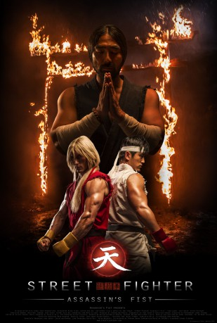

#5971 Street Fighter: Assassin's Fist
 
 IMDB-Wertung: 7.5 / 10
IMDB-Wertung: 7.5 / 10  Metascore: 0
Metascore: 0 
A multi-layered series that looks back to the formative years of Ryu and Ken as they live a traditional warrior's life in secluded Japan. The boys are, unknowingly, the last practitioners of the ancient fighting style known as "Ansatsuken" (Assassin's Fist). The series follows them as they learn about the mysterious past of their master, Goken, and the tragic, dark legacy of the Ansatsuken style. Can their destiny be changed, or will history repeat itself?
Jahr: 2014
Dauer: 146 Minuten
FSK: 16
Land: England Studio: MachinimaTonspuren:
Untertitel: Deutsch,
Auflösung: 720p (1280x536) Größe: 3778 MB
Genre: Action, Thriller, Drama, Abenteuer
Regisseur: Joey Ansah
Drehbuch: Garnet Campbell
Soundtrack:
Darsteller:
 Togo Igawa als Gôtetsu
Togo Igawa als Gôtetsu- Christian Howard als Ken Masters
- Mike Moh als Ryu
- Shogen als Young Gôken
- Gaku Space als Gôki
 Akira Koieyama als Gôken
Akira Koieyama als Gôken- Joey Ansah als Akuma
 Hal Yamanouchi als Senzô
Hal Yamanouchi als Senzô Mark Killeen als Mr. Masters
Mark Killeen als Mr. Masters- Hyunri als Sayaka
- Matisse Ferreira als Shadaloo Enforcer
- Wu Kong Hai Anh als Ryu
- Zang Chung Dank als Ryu
- Victor Hua Fam als Gouken
- Thu An Nguyen als Sayana
- Yoshinori Ono als Ono
Datei: X:\HD-Eastern-Classic(N-Z)\Street Fighter Assassin's Fist (2014, FSK16, 1280x536).mkv seit 15.04.2017
Festplatte: HD Eastern+Western
 Es gibt insgesamt 61 Filme in der Gruppe 'HD-Eastern-Classic(N-Z)'
Es gibt insgesamt 61 Filme in der Gruppe 'HD-Eastern-Classic(N-Z)'